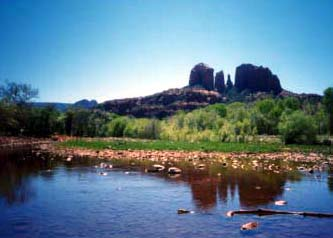
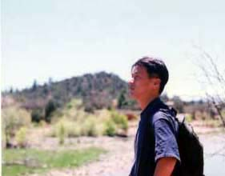
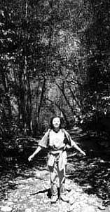
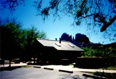

セドナ日記 〜 第４日目 98.5.7
カシドラルロックが見えるクリークから
 はやいもので、セドナに宿泊できるのは今夜が最後になってしまった。といっても、最初からたかだか５日しか日程がないのだから、あっというまに終わりが近づくのは当然である。
その日は、朝から「グランド・キャニオン」のことで、ちょっと悩んでいた。セドナであった多くの人から、「是非とも、グランド・キャニオンには行くように」と勧められていたからである。確かに、セドナからの距離は片道２００マイル程で日帰りできない距離ではない。いつもの豪華な朝食をとりながら、千穂と相談する。そして、ぼくらは、昨日絵葉書の写真で見たが、まだ行ったことがない風景があることを思い出した。「川が流れていて、その川にカシドラルロックが映ってるところ」そんなところを思い出した。グランド・キャニオンは即座に却下され、さらなるセドナ散策の一日が始まるのだった。「グランドキャニオンはいつでもいけるもんね」
「そうそう」
そんな具合に、その日もお昼用のりんごをバスケットから頂いて、準備万端出かけるのであった。

その、僕らのまだ見ぬ風景は、RED ROCK STATE PERKから見つけることができた。そのRED ROCK STATE PERKはダウンタウンから84Aを4〜５マイル西に走ったところを、左（UPPER RED ROCK LOOP RD)に曲がる。そこからさらに一マイルほどくねくねカーブを進んだところにある。入り口にはきちんとゲートがあり、駐車場代がかかる。（セドナで駐車場に費用がかかったのはもしかしたら、ここだけだっだような気がする。というか公園管理費ですね。確か５ドル位だったと思うのですが....）

平日のせいか、とても空いている。天気もいい、空気もいい、鳥はないてる、人はいない。素敵なところである。
駐車場からカシドラルロック方面にむかって、川沿いにトレイルが整備されている。「川沿いの、こもれ日の中を君と歩いた、思いでを〜」などと、聞いたこともない歌詞が出てきそうな風景である。そして、川面がみえるとこまでくると、そこには絵葉書の風景がしっかりと、存在していたのであった。川越しにカシドラルロックがそびえ、その姿が水面に映っている。つい見つめてしまう。見つめないでいれる人は、きっと少ないと思う。
セドナを見尽くす、味わい尽くすには、いったいどれだけの時間が必要なのだろうか？あらためて、この地の偉大さに感銘をうけた。川沿いのトレイルを進むことにした。川の流れを聞きながらしばらく林の中を進むと、岩盤の河原（というのかな？）にでた。岩盤といっても浸食を複雑な形をしているが、きっと一枚の大きな岩におもえた。そんな、岩の河原から、足だけ川につけて、日光浴を楽しむ。千穂はデッサンを始める。僕はしばし、眠りに落ちる。
そして、しばらくの後、昼食のりんごも頂く。のどかとしか言いようのないセドナのすてきなお昼時が過ぎていった。川と岩山が交錯する、この場所は、陰陽のバランスも好いのかもしれない。リラックスには最高の場所だった。